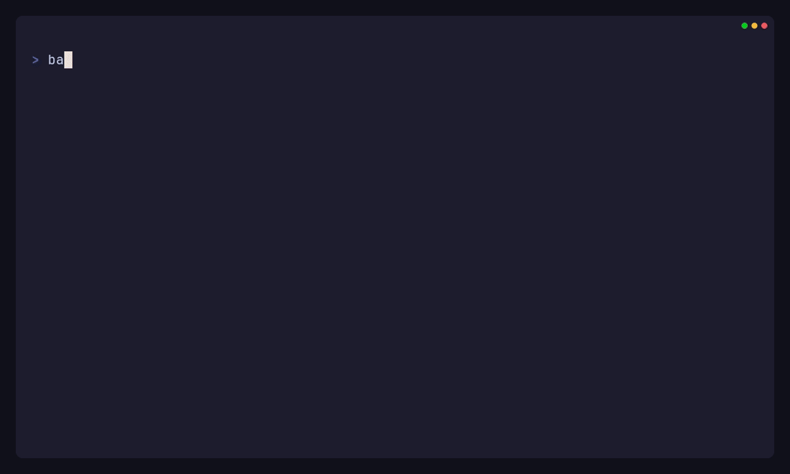
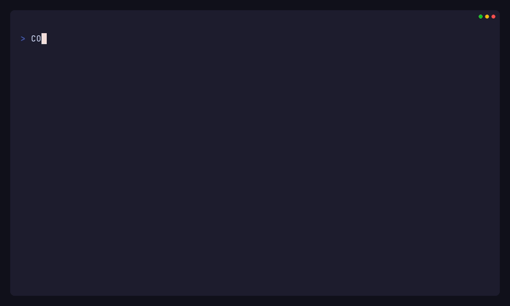
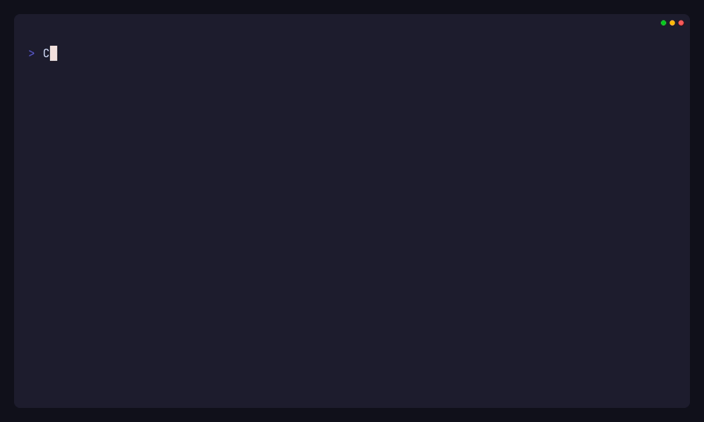

See it under the hood
Real recordings of the analyzer working against the repository's deterministic offline demo — local Composer path repositories, real solver runs, no network.

blocked: the 10→11 hop retains two
simultaneous blockers with different lifecycles, 11→12 is Composer-feasible, and 12→13 stops
on a missing platform extension plus an original-source finding. Before/after target digests match.

jq walks the canonical JSON: resolution.status,
the blocker's dependency path and resolution options, then its evidence IDs —
straight to the exact Composer command and the solver's own output excerpt.

What you get
Decision-support evidence for the upgrade you haven't started yet.
Read-only, provably
The analyzed project is immutable input. Composer runs only in disposable workspaces with scripts and plugins disabled, and recursive digests prove the target stayed byte-for-byte unchanged.
Real Composer resolutions
No solver guesswork: the analyzer runs actual Composer scenarios and preserves each exact command, version, duration, exit status, output excerpt, and candidate-lock fingerprint.
Staged Laravel 7 → 13
Sequential analysis across adjacent Laravel hops, each with its own Composer evidence. Only the selected candidate state feeds the next stage; the direct final-target result stays independent.
Canonical JSON + Markdown
JSON (schema 0.8) is the canonical report; Markdown is a faithful projection of the same data with no independent analysis logic. Automation reads statuses from the report, not exit codes.
Risk, effort, uncertainty
Risk drivers, effort as ranges with assumptions and confidence — never precise promises. Missing or weak evidence is reported as explicit uncertainty, and every finding links evidence IDs.
Secret redaction
Composer output passes through a deterministic secret boundary: credential-bearing URLs, tokens, and auth values become stable redaction markers, and local paths become portable placeholders.
How it works
One deterministic pipeline from project state to evidence-linked report.
The core is framework-neutral; Laravel is the first adapter, and third-party adapters register through Composer metadata. Composer remains the dependency solver — the analyzer explains its results instead of re-implementing them.
What it is — and what it is not
PHP Upgrade Preflight is in public beta. It provides decision-support evidence: it does not perform the upgrade, does not modify or execute the analyzed application, does not prove runtime compatibility, and does not guarantee a successful deployment. Effort figures are ranges with stated assumptions, not promises.
Review every report and validate the resulting upgrade with the application's own test and deployment process. Secret redaction is a publication safeguard, not an execution sandbox.